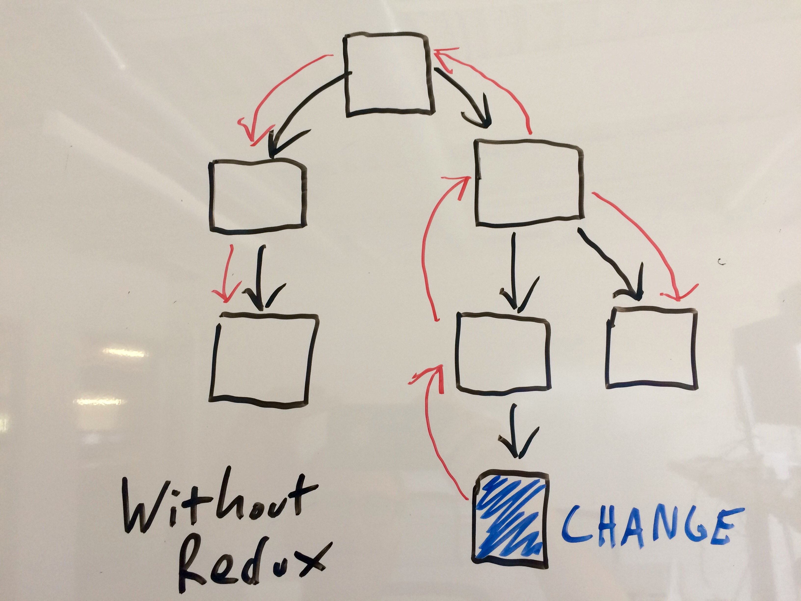
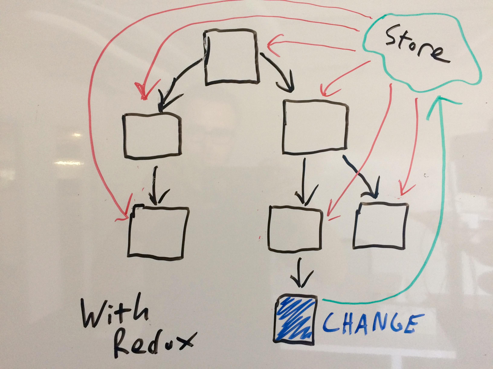

class: center, middle # Introduction to Redux Predictible State Management <br><br><br><br> <small>Presented by *Michael Herman*</small> --- ## Note This talk builds on the [code](https://github.com/mjhea0/node-workshop/tree/master/w2/exercises/node-jobs-react-class) from an [Introduction to React](http://mherman.org/node-workshop/slides/react-intro). --- ## Agenda -- ##### (1) About Me ##### (2) Objectives ##### (3) Theory 1. Why Redux? 1. What is Redux? -- ##### (4) Practice 1. Create React App (w/Redux) - project setup - create a store - define a reducer - add an action - refactor - update the view - add a child component ##### (5) Next Steps --- ## About Me ``` $ whoami michael.herman ``` -- #### Day Job: [Galvanize](http://www.galvanize.com/) (since May 2015)... 1. ~~Lead Instructor Full Stack~~ 1. ~~Curriculum Developer~~ 1. Senior Software Engineer -- #### Also: 1. Co-founder/author of [Real Python](https://realpython.com) 1. 😍 - [tech writing](http://mherman.org), [open source](http://github.com/mjhea0), [financial models](http://www.starterfinancialmodel.com/), [radiohead](http://radiohead.com/), [chilling](images/me.jpg) --- ## Objectives By the end of this talk you should be able to: 1. Describe Redux along with the "Three Principles" of Redux 1. Describe the difference between actions, reducers, and stores as well as how each relates to state 1. Add Redux to a React app created with the Create React App boilerplate 1. Set up a basic React + Redux app 1. Add Redux to the existing React Jobs App --- ## Why Redux? http://redux.js.org/docs/introduction/Motivation.html As your React app grows, state generally becomes more and more [spread out](images/state-issues.jpg) amongst different class-based components. This is messy. Plus, state is tightly coupled with the view logic. -- Redux helps to mitigate those issues by managing state in a single place outside of React, promoting- 1. A single source of truth 1. Seperation of concerns -- <br> <div class="container"> <div class="row"> <div class="col-xs-4"> <a href="images/state-change-without-redux.jpg"><a> </div> <div class="col-xs-4"> <a href="images/state-change-with-redux.jpg"></a> </div> </div> </div> --- ## What is Redux? (part 1) [Redux](http://redux.js.org/) is a tool based on the [Flux](https://medium.com/hacking-and-gonzo/flux-vs-mvc-design-patterns-57b28c0f71b7) pattern for managing application state. -- ### Principles 1. **Single source of truth**: The *state* of your whole application is stored in an object tree within a single *store*. 1. **State is read-only**: The only way to change the state is to emit an *action*, an object describing what happened. 1. **Changes are made with pure functions**: To specify how the state tree is transformed by actions, you write pure *reducers*. [Source](https://github.com/reactjs/redux/blob/master/docs/introduction/ThreePrinciples.md) --- ## What is Redux? (part 2) ### Definitions 1. **State**: an object, probably nested 1. **Actions**: describes intended change of state, declarative, think of an action as just a set of instructions used by Redux to update state 1. **Reducers**: pure function, which takes the previous state and action as arguments, returns updated state, should be the only thing updating state 1. **Store**: where state lives [Source](http://redux.js.org/docs/basics/) -- <br> ### `Action -> Reducer -> State -> View` --- ## Project Setup Create Project: ```sh $ create-react-app hello-world-react-redux $ cd hello-world-react-redux $ npm start ``` Remove everything in "src" except the *index.js*, and then install Redux: ```sh $ npm install redux@3.6.0 react-redux@5.0.3 --save ``` From the project root, add the following directories and files to "src": ```sh $ cd src && mkdir actions components reducers && touch store.js && cd .. ``` Check the structure: ```sh $ tree -I node_modules ``` --- ## Create a Store *index.js*: ```javascript import React from 'react'; import ReactDOM from 'react-dom'; import { createStore } from 'redux'; const store = createStore(); const App = () => { return ( <div className="container"> <h1>Hello, World!</h1> </div> ) } ReactDOM.render( <App />, document.getElementById('root') ); ``` -- You should see the following error in your browser - `Error: Expected the reducer to be a function`. Why? -- *`createStore()` takes a reducer* --- ## Define a Reducer Update *index.js*: ```javascript const reducer = (state=0, action) => { return state; } const store = createStore(reducer); console.log(store.getState()); ``` -- What's happening? -- 1. We defined a reducer, which takes the previous state (`0`) and an action (which we have yet to define) and returns a new state (`0`). 1. The reducer is then passed as an argument into `createStore`, setting the initial state of the app. -- Now we can add an action to update state... --- ## Add an Action First, let's update the reducer: ```javascript const reducer = (state=0, action) => { if (action.type === 'INCREMENT') return ++state; return state; } ``` -- So, when the reducer gets an `INCREMENT` action, it should return `state` + `1`. -- Add the action: ```javascript const incrementAction = { type: 'INCREMENT' } ``` -- Test it out: ```javascript console.log('before -> ', store.getState()); store.dispatch(incrementAction); console.log('after -> ', store.getState()); ``` -- The `dispatch()` applies the action to the store so that the state is changed. -- **YOUR TURN!** Add a `DECREMENT` action... --- ## Refactor (part 1) First, move the store to *stores.js*: ```javascript import { createStore } from 'redux'; import reducer from './reducers'; const store = createStore(reducer); export default store; ``` -- Second, add an *index.js* file to "reducers": ```javascript function reducer(state=0, action) { if (action.type === 'INCREMENT') return ++state; return state; } export default reducer; ``` -- To test, remove the `store` and `reducer` definitions from *index.js* and add in the import - `import store from './store'`. --- ## Refactor (part 2) Next, an *index.js* file to "actions": ```javascript const incrementAction = { type: 'INCREMENT' }; export default incrementAction; ``` -- Remove the action from *index.js* and add the import - `import incrementAction from './actions'`. Test it out! -- **YOUR TURN!** 1. Update your code to handle the `DECREMENT` action. 1. Review the code with your neighbor, adding in comments as necessary. --- ## Update the View (part 1) Remove: ```javascript console.log('before -> ', store.getState()); store.dispatch(incrementAction); console.log('after -> ', store.getState()); ``` -- Update `App`: ```javascript const App = () => { return ( <div className="container"> <h1>Hello, World!</h1> <br/> <p>Value: <span>{ store.getState() }</span></p> <button className="btn btn-success" onClick={ () => store.dispatch(incrementAction) } >+</button> </div> ) } ``` -- **YOUR TURN!** You've seen this all before. Review it with your neighbor. --- ## Update the View (part 2) Update the `render` method: ```javascript const render = () => { ReactDOM.render( <App />, document.getElementById('root') ) } store.subscribe(render); render(); ``` -- What's happening? -- 1. We wrapped `ReactDOM.render()` in a function aptly named `render` 1. `render()` is added as the store via `subscribe` - which listens for changes any time an action is dispatched --- ## Add a Child Component (part 1) Within "components", add a new file called *Child.jsx*: ```javascript import React from 'react' const Child = (props) => { return ( <div> <h2>Functional Child Component</h2> </div> ) } export default Child ``` -- Add the import to *index.js*. ```javascript import Child from './components/Child.jsx' ``` -- Add `<Child/>` to the `render` function, just below the button. --- ## Add a Child Component (part 2) Add `props` to `<Child/>`: ```javascript <Child onIncrement={ () => store.dispatch(incrementAction) } /> ``` -- Add the button to `Child`: ```javascript <button className="btn btn-primary" onClick={ props.onIncrement } >+</button> ``` -- **YOUR TURN!** You've seen this all before. Review it with your neighbor. --- ## Next Steps That's it! What's next? 1. Make it look nice. Add Bootstrap. 1. Grab the final [code](https://github.com/mjhea0/node-workshop/tree/master/w2/exercises/hello-world-react-redux). 1. Turn to the [node-jobs-react-class](https://github.com/mjhea0/node-workshop/tree/master/w2/exercises/node-jobs-react-class) project. Add Redux and add jobs to a new store. Make sure to handle the AJAX request correctly. Questions?